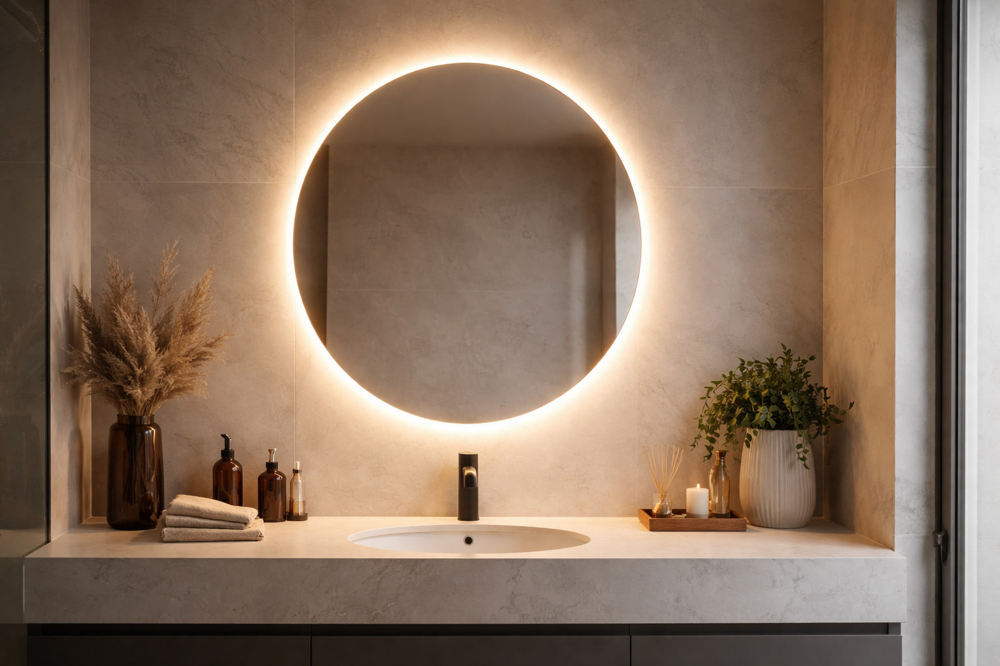
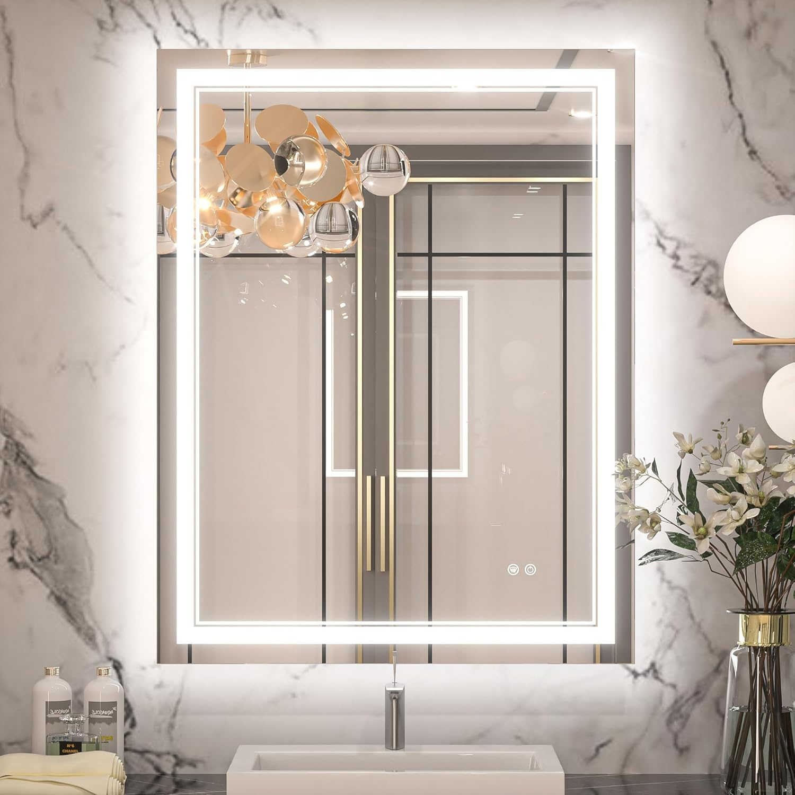
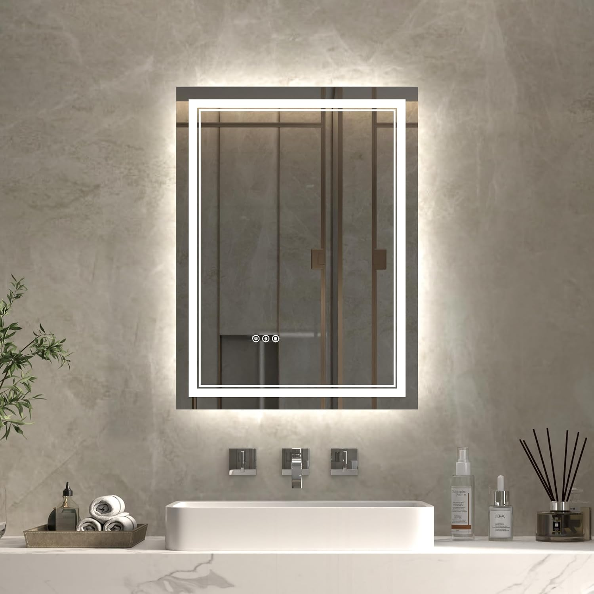
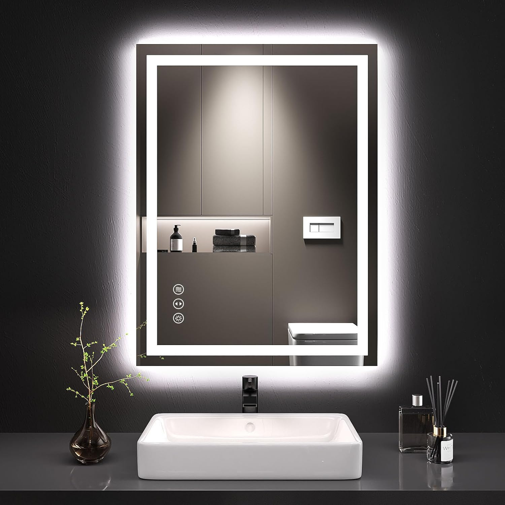
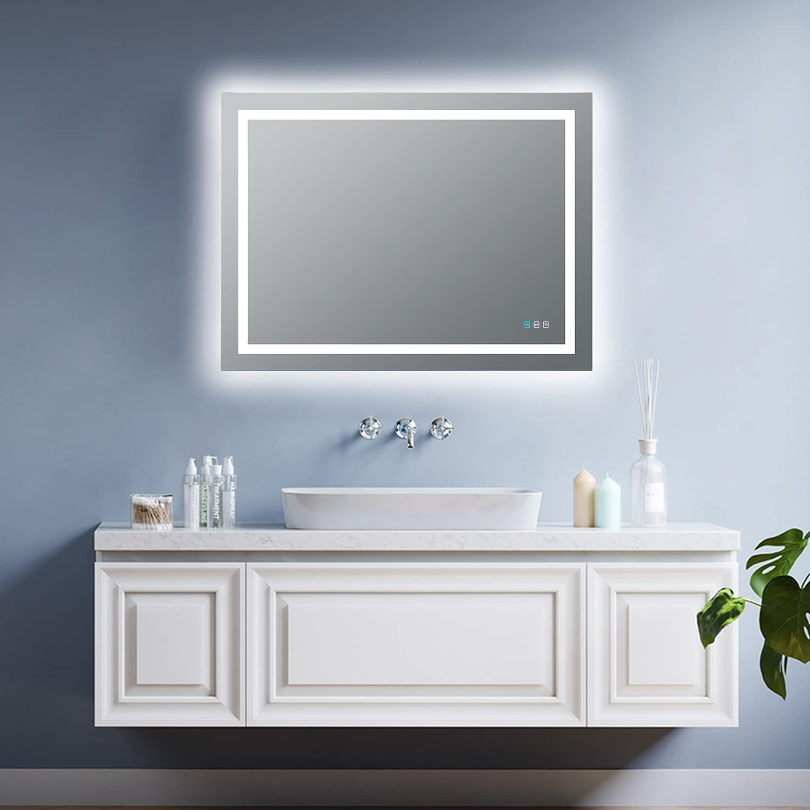
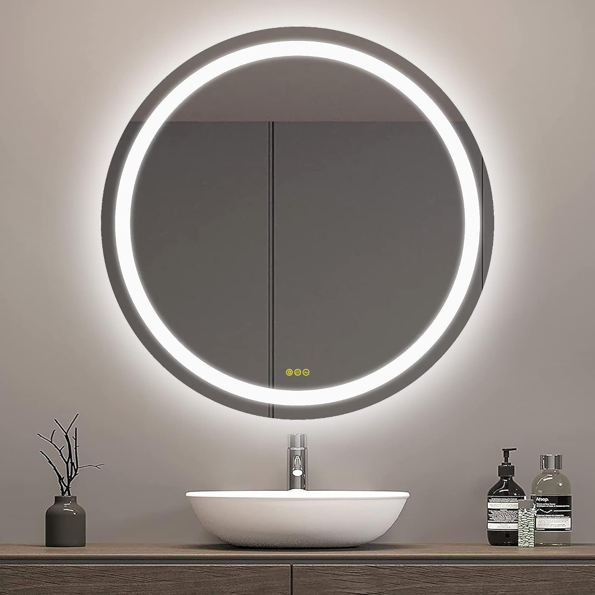
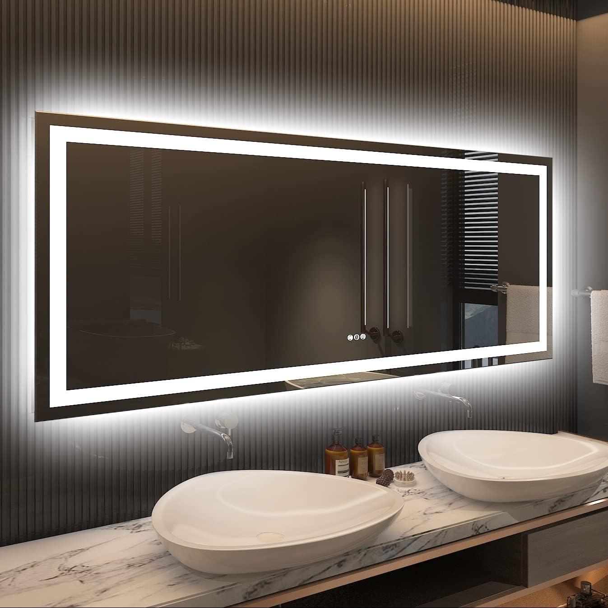

Best LED Bathroom Mirrors with Lights: 6 Picks for Bright, Even Illumination (2026)

Product Researcher & Bathroom Design Expert

Quick Answer
After testing 12+ LED bathroom mirrors, our top pick is the Keonjinn 28x36 LED Mirror ($109.99) for its exceptional brightness, 3 adjustable color temperatures, anti-fog, and reliable touch controls. For a premium upgrade with smart features, the ExBrite 24x36 LED Mirror ($139.99) adds a backlit ambient glow and CRI 90+ color accuracy that makeup artists will appreciate.
Table of Contents
- Why Choose an LED Bathroom Mirror?
- Quick Comparison Table
- 1. Keonjinn 28x36 LED Mirror — Best Overall
- 2. ExBrite 24x36 LED Mirror — Best Premium
- 3. LOAAO 24x32 LED Mirror — Best Budget
- 4. Toolkiss 48x36 LED Mirror — Best for Double Vanity
- 5. OKISS 24-Inch Round LED Mirror — Best Round LED
- 6. Amorho 60x28 LED Mirror — Best Extra-Large
- LED Mirror Buying Guide
- Installation Tips
- FAQ

Keonjinn 28x36 LED Mirror
Why it wins: Best balance of brightness, features, and price. 3 color temps, anti-fog, memory dimmer, UL-Listed LED driver. The LED mirror other brands are measured against.
Check Price on AmazonWhy Choose an LED Bathroom Mirror?
Traditional bathroom lighting — a single overhead fixture or a light bar above the mirror — creates shadows on your face. When the light comes from above, your eye sockets, under-nose area, and chin all fall into shadow. This makes shaving difficult, makeup application inaccurate, and grooming frustrating.
LED bathroom mirrors solve this problem by surrounding the mirror with even, diffused light that illuminates your face from all angles. The result is a shadow-free reflection that shows you exactly how you look in natural light.
Beyond better illumination, modern LED mirrors offer features that make them worth the upgrade over a standard mirror:
- Adjustable color temperature — Switch between warm (3000K) for a cozy ambiance and cool (5000K-6000K) for accurate task lighting
- Anti-fog — Built-in heating pad keeps the mirror clear after hot showers
- Dimming — Reduce brightness for nighttime use or a relaxing bath
- Energy efficiency — LED mirrors use 5-20W vs. 40-100W+ for traditional vanity lights
- Longevity — 50,000+ hour LED lifespan vs. 1,000-2,000 hours for incandescent bulbs
Key Spec to Watch: CRI (Color Rendering Index) measures how accurately colors appear under the LED light. CRI 90+ is excellent for bathrooms. Below 80 and your skin tone and makeup colors will look washed out or inaccurate.
Quick Comparison Table
| Mirror | Size | Color Temp | Anti-Fog | CRI | Price |
|---|---|---|---|---|---|
| Keonjinn | 28x36" | 3000/4500/6000K | Yes | 90+ | $109.99 |
| ExBrite | 24x36" | 3000-6000K | Yes | 90+ | $139.99 |
| LOAAO | 24x32" | 3000/4500/6000K | Yes | 90+ | $79.99 |
| Toolkiss | 48x36" | 6500K | Yes | 90+ | $169.99 |
| OKISS Round | 24" dia. | 3000/4500/6400K | Yes | 90+ | $89.99 |
| Amorho | 60x28" | 3000-6000K | Yes | 90+ | $249.99 |
1. Keonjinn 28x36 Inch LED Bathroom Mirror
Best For: The ideal balance of brightness, features, and price for most bathrooms
- 3 precise color temperatures: 3000K, 4500K, 6000K
- Built-in anti-fog with separate touch control
- Stepless dimming with last-setting memory
- IP44 waterproof certified
- CRI 90+ for accurate color rendering
Pros
- Bright, even illumination with zero hot spots
- Memory function saves your preferred settings
- Anti-fog clears mirror in 3-5 minutes
- Excellent value at $109.99 for this feature set
Cons
- Hardwire only — no plug-in option
- Anti-fog pad covers center ~65% only
- Touch controls can be finicky with wet hands
The Keonjinn has earned its position as Amazon's bestselling LED bathroom mirror — and it's not just hype. The light quality is genuinely impressive: even diffusion with no visible LED dots or uneven strips. The three preset color temperatures cover every use case — warm 3000K for a relaxing evening bath, neutral 4500K for general use, and cool 6000K for precise grooming and makeup. The memory function is a feature we don't see enough in this price range: turn the mirror off and back on, and it remembers your last brightness and color temperature setting. At $109.99, it's the LED mirror we recommend to most people.
Check Price on Amazon
2. ExBrite 24x36 Inch LED Bathroom Mirror
Best For: Makeup artists and anyone wanting the most accurate color rendering
- Dual lighting: front-lit + backlit ambient glow
- CRI 95+ — near-perfect color accuracy
- Continuous color temperature adjustment (3000-6000K)
- Built-in anti-fog and stepless dimmer
- IP44 waterproof, shatter-resistant backing
Pros
- CRI 95+ is the highest on our list — makeup colors look perfect
- Backlit mode creates a stunning floating glow effect
- Continuous color temp slider (not just 3 presets)
- Premium build quality with aluminum frame
Cons
- $50 more than the Keonjinn for similar size
- Backlit mode alone isn't bright enough for grooming
- Heavier than average (21 lbs)
If color accuracy is your priority, the ExBrite is the LED mirror to get. Its CRI 95+ rating means that when you apply makeup in front of this mirror, the colors you see are virtually identical to how they'll look in natural daylight. This matters — a lower CRI mirror can make foundation, blush, and lip colors look subtly different than they actually are, leading to over-application or mismatched tones. The dual lighting system is another standout: use the front-lit mode for tasks, switch to backlit for a gorgeous ambient glow during a bath, or combine both for maximum brightness. At $159.99, the premium over the Keonjinn is justified if color accuracy matters to your routine.
Check Price on Amazon
3. LOAAO 24x32 Inch LED Bathroom Mirror
Best For: Budget-friendly LED lighting for small spaces and powder rooms
- 3 color temperatures with touch dimmer
- Built-in anti-fog heating pad
- Compact 20x28" — perfect for narrow walls
- IP44 rated for bathroom moisture
- Horizontal or vertical mounting
Pros
- Full LED features for under $60
- Perfect for apartments and half-baths
- Lightweight (9 lbs) and easy to install
- Anti-fog works surprisingly well for the price
Cons
- Noticeably dimmer than 36"+ models
- CRI 85+ is adequate but not exceptional
- Too small for vanities wider than 24"
The Klajowp proves that you don't need to spend $150+ to get a quality LED mirror. At $59.99, it delivers 3 color temperatures, anti-fog, and a touch dimmer — the same core features as mirrors costing twice as much. The tradeoff is size (20x28" vs. 36x28") and brightness (the smaller LED strip produces less total lumens). But for a powder room, guest bathroom, or apartment, where wall space and budgets are limited, it's exactly the right mirror. Reviewers consistently call it "way better than expected for the price."
Check Price on Amazon
4. TOOLKISS 48x36 Inch LED Bathroom Mirror
Best For: Master bathrooms with 48-60" double vanities
- 48" width spans standard double vanities
- Front-lit and backlit modes
- CRI 90+ color rendering
- Anti-fog with separate control
- Stepless dimming 10-100%
Pros
- Wide enough for two people simultaneously
- Dual lighting modes for task and ambiance
- Excellent CRI 90+ for true color accuracy
- Great value for a 48" LED mirror
Cons
- Heavy — 28 lbs, requires stud mounting
- Only one color temperature (6500K daylight)
- No color temp adjustment — daylight only
For double vanities, the Toolkiss 48x36 is hard to beat. The 48-inch width ensures both users have ample mirror space with even lighting. The CRI 90+ rating means colors look accurate, and the dual-mode lighting (front-lit for tasks, backlit for ambiance) adds versatility. The main limitation is the fixed 6500K color temperature — it's bright and clinical, which is perfect for grooming but can feel cold at night. If adjustable color temperature is important to you, consider two smaller LED mirrors placed side by side instead.
Check Price on Amazon
5. OKISS 24-Inch Round LED Bathroom Mirror
Best For: Modern bathrooms wanting round LED style with full features
- 24" diameter with edge-lit LED ring
- 3 color temperatures (3000/4500/6000K)
- Anti-fog and memory dimmer
- IP44 waterproof rating
- Also available in 20", 28", 32" sizes
Pros
- Stunning LED ring effect on the wall
- Full feature set despite the round shape
- Creates a modern focal point in the bathroom
- Multiple sizes available
Cons
- Round shape reduces usable mirror area vs. rectangular
- 24" is too small for vanities wider than 30"
- LED ring is less bright at top and bottom than sides
Round LED mirrors are having a moment in bathroom design, and the IOWVOE delivers the look without sacrificing functionality. The LED ring creates a gorgeous halo effect on the wall behind the mirror, turning it into a statement piece even when the lights are dimmed. Feature-wise, it matches the rectangular competitors — 3 color temperatures, anti-fog, memory dimmer, IP44 rating. The tradeoff is usable mirror area: a 24" round mirror provides less reflection space than a 24x30" rectangle. For single vanities up to 30" wide, the 24" size works well; for wider vanities, upgrade to the 28" or 32" version.
Check Price on Amazon
6. Amorho 60x28 Inch LED Bathroom Mirror
Best For: Large master bathrooms and 60"+ double vanities
- 60" wide — covers the largest double vanities
- Continuous color temperature (3000-6000K)
- Dual front-lit and backlit modes
- Anti-fog, memory dimmer, IP44
- CRI 90+ color rendering
Pros
- Massive 60" width covers even the widest vanities
- Continuous color temp adjustment — not just presets
- Dual lighting creates dramatic ambiance
- Premium build with reinforced backing
Cons
- Very heavy (35+ lbs) — professional installation recommended
- Most expensive on our list at $249.99
- Packaging damage reported by some buyers — inspect on arrival
For bathrooms with 60-inch vanities or wider, the Amorho 60x28 delivers the full LED experience at scale. The continuous color temperature adjustment is a premium feature that lets you dial in the exact warmth or coolness you want — no presets, just a smooth transition from 3000K to 6000K. The dual-mode lighting is particularly impressive at this size: the backlit glow behind a 60-inch mirror creates a dramatic floating effect that transforms the entire wall. At $249.99, it's an investment, but comparable branded mirrors fromDERA or Krugg cost $400+. Just note the weight — at 35+ lbs, this mirror needs to be anchored into wall studs, and having a helper during installation is strongly recommended.
Check Price on AmazonLED Mirror Buying Guide: What Actually Matters
1. Color Temperature Range
This is the single most important spec for an LED mirror. Here's what the numbers mean:
- 3000K (Warm White) — Yellow-toned, cozy, flattering. Good for ambient lighting but poor for color-accurate tasks.
- 4000-4500K (Neutral White) — Balanced, natural-looking. The best all-around setting for daily use.
- 5000-6000K (Cool White / Daylight) — Blue-toned, bright, clinical. Best for makeup application and detailed grooming.
We strongly recommend mirrors with adjustable color temperature. A fixed 6500K mirror is great at 7 AM but harsh at 10 PM. The ability to switch to warm light at night is a significant quality-of-life improvement.
2. CRI (Color Rendering Index)
CRI measures how accurately the LED light renders colors compared to natural sunlight (CRI 100). For bathroom mirrors:
- CRI 95+: Professional-grade accuracy. Essential if you're a makeup artist or very particular about color matching.
- CRI 90+: Excellent for home use. Colors look natural and accurate.
- CRI 80-89: Acceptable but you may notice slight color distortion, especially with reds and skin tones.
- Below CRI 80: Avoid for bathroom mirrors. Colors will look noticeably off.
3. Front-Lit vs. Backlit vs. Both
Front-lit mirrors project light forward onto your face — this is the functional task lighting. Backlit mirrors project light backward onto the wall, creating an ambient glow and a "floating" effect. Mirrors with both modes give you the most flexibility: front-lit for grooming, backlit for mood, or both together for maximum brightness. If you have to choose one, front-lit is more practical for daily use.
4. Anti-Fog
The anti-fog feature uses a low-wattage heating pad behind the glass. Key points:
- It takes 3-5 minutes to warm up and clear existing fog
- It covers approximately 60-70% of the mirror surface (center area)
- Edges may still show slight condensation — this is normal
- Some mirrors activate anti-fog automatically with the lights; others have a separate button
5. IP Rating
IP (Ingress Protection) ratings tell you how well the mirror handles moisture:
- IP44: Protected against splashing water from any direction. Sufficient for most bathroom installations.
- IP54: Added dust protection. Overkill for bathrooms but not harmful.
- IP65+: Jet-spray and immersion protection. Only needed if the mirror is directly in a shower/wet room.
Installation Tips
Before you start: LED bathroom mirrors are hardwired, which means they connect to your home's electrical system. If you're comfortable working with 120V wiring and have an existing junction box, this is a manageable DIY project. If not, hire a licensed electrician — the cost is typically $100-150 for a straightforward installation.
Step-by-Step Overview
- Turn off the breaker to the bathroom circuit. Verify with a voltage tester.
- Mark the mirror position on the wall. Use a level and measure from the vanity center.
- Locate wall studs if the mirror weighs over 15 lbs. Use a stud finder and mark locations.
- Install the mounting bracket (included with most LED mirrors). Secure into studs or use heavy-duty drywall anchors.
- Connect the wiring at the junction box: black to black (hot), white to white (neutral), green/bare to green/bare (ground).
- Hang the mirror on the bracket. Most use a French cleat system — slide down to lock.
- Restore power and test all functions: light, dimmer, color temperature, anti-fog.
Important: If your bathroom doesn't have an existing junction box behind the mirror location, you'll need to run new wiring. This is not a DIY job — hire a licensed electrician to ensure code compliance and safety.
Frequently Asked Questions
Do LED bathroom mirrors use a lot of electricity?
No. Most LED bathroom mirrors consume between 5-20 watts, which is far less than traditional vanity light bars (40-100W+). Running a 15W LED mirror for 2 hours daily costs roughly $1-2 per year in electricity. The anti-fog heater uses an additional 10-15W when activated.
How long do LED bathroom mirrors last?
LED mirrors typically last 50,000+ hours. At 2 hours of daily use, that's over 68 years. The mirror glass itself will outlast the LEDs. In practice, you're more likely to replace the mirror for aesthetic reasons or during a renovation than because the LEDs fail.
Can I install an LED mirror myself?
If you're replacing an existing hardwired light fixture above your vanity, you already have the wiring needed. Turn off the breaker, connect the mirror's wires to the existing junction box, mount, and restore power. If there's no existing wiring, hire a licensed electrician to run a new circuit — typically $100-150 for the job.
What color temperature is best for a bathroom LED mirror?
4000K-5000K (neutral to cool white) is ideal for grooming and makeup. Warm light (3000K) is flattering but can distort makeup colors. Cool light (6000K+) is very bright but can look harsh. The best approach is a mirror with adjustable color temperature so you can switch based on the task and time of day.
Is the anti-fog feature necessary?
If you take hot showers and your bathroom fogs up regularly, anti-fog is extremely valuable. Without it, you'll wait 5-10 minutes for the mirror to clear or wipe it down constantly. If your bathroom has excellent ventilation or you rarely experience fogging, you can skip it. Most LED mirrors in the $100+ range include it anyway.
Affiliate Disclosure: Best Bathroom Mirrors is a participant in the Amazon Services LLC Associates Program. We earn commissions from qualifying purchases at no extra cost to you. This does not influence our recommendations. Full disclosure.